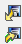
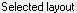
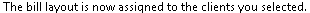

from sikuli import * import logging import myTools #---------------------------------------------------# def fImport_Layout(pThisLayout): #---------------------------------------------------# logging.debug('- open layout list') type("b",KeyModifier.ALT) type("t") wait(,FOREVER) time.sleep(1) logging.debug('- import layout') click(Pattern().targetOffset(3,-9)) time.sleep(3) layoutFilePath = Settings.dataFolder + "\\" + pThisLayout + ".tsl" type(layoutFilePath) type(Key.ENTER) time.sleep(3) type(pThisLayout) logging.debug('- save layout') type("l",KeyModifier.ALT) type("s") time.sleep(1) type(Key.F4,KeyModifier.CTRL) time.sleep(1) #---------------------------------------------------# def fAssign_Layout(): #---------------------------------------------------# logging.debug('- assign layout') type("a",KeyModifier.ALT) wait(Pattern().similar(0.60)) time.sleep(1) type(Key.INSERT) wait() time.sleep(1) type("a",KeyModifier.ALT) time.sleep(1) type(Key.ENTER) wait(,FOREVER) time.sleep(1) type(Key.ENTER) time.sleep(1) #---------------------------------------------------# def fImport_BillLayout(pLayoutName): #---------------------------------------------------# myTools.sectionStartTimeStamp("import layout") logging.debug('Import_BillLayout') # make sure timeslips has focus myTools.getFocus() fImport_Layout(pLayoutName) fAssign_Layout() type(Key.F4,KeyModifier.CTRL) myTools.sectionEndTimeStamp()